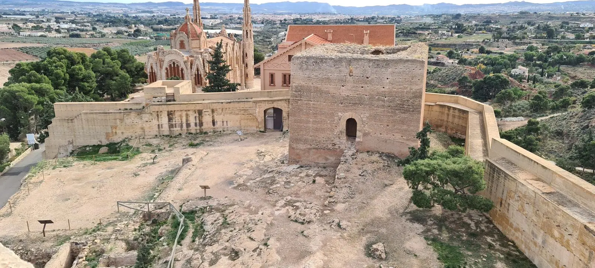

El castillo de la Mola
El castillo de la Mola está ubicado sobre un pequeño cerro a 360m de altitud con relación al mar y dista 3 km de la población de Novelda, en dirección noroeste. Desde este cerro domina visualmente el valle medio del Vinalopó y forma parte de la red de castillos y torres que durante la Edad Media constituyeron un importante sistema de control y defensa del territorio andalusí frente a los reinos cristianos de Castilla y Aragón.
El primer asentamiento que conocemos se situaba en la ladera sur y correspondía a una poblado de la Edad de Bronce, siendo en época islámica (siglo x) cuando se construye y habita un recinto fortificado, destacando de la época musulmana con la llegada de los almohades (siglo xii), la construcción del castillo formado por dos recintos; el «albacar», espacio protegido por una muralla y utilizado como refugio por la población asentada en las alquerías rurales situadas en el valle de Novelda, un un segundo espacio formado por la fortaleza con una línea de muralla, varios torreones de defensa. Su planta es poligonal con ocho cubos cuadrangulares en saliente, de los que actualmente sólo quedan cuatro, dos de ellos enmascarados, con una torre cuadrada exenta en su interior de 9m de lado por 11 de altura, en la actualidad desmochada al faltarle una altura, cuenta con una sala inferior iluminada por una aspillera. Se entra en la torre por una puerta de medio punto y situada en altura. Todo ello de fábrica de tapial, sobre base de mampostería.
Tras la conquista cristiana del Castillo por la huestes del Infante Don Alfonso de Castilla, tierras y fortaleza pasaron a la Corona Castellana. Con la firma del Pacto de Elche en 1305, el Castillo y sus dependencias pasan a la Corona Aragonesa, formando parte estas tierras del Reino de Valencia. Es entonces cuando la fortaleza es donada a Doña Blanca de Anjou, esposa de Jaime II de Aragón, quien ordena la reconstrucción de sus deteriorados muros, realizándose durante el siglo xiv, una serie de reformas en el recinto fortificado, y construyendo en su flanco noroeste una magnífica torre triangular. La torre de 15 metros de lado por 17 metros de altura no tiene paralelos conocidos hasta la actualidad; es de fábrica de mampostería, con refuerzo de sillería en las esquinas. Se accede a ella por una puerta de medio punto orientada al noroeste y situada en altura, de fábrica de sillería. Tiene dos plantas y su iluminación interior se realiza a través de varias aspilleras.
A mediados del siglo xiii, el castillo de La Mola queda despoblado al ser conquistado por las huestes cristianas del Infante don Alfonso de Castilla. Los musulmanes, emigran o se asientan en lo que se convertirá en el actual centro urbano de Novelda, formando un núcleo importante de población mudéjar. En función de la importancia estratégica de la fortaleza, en el siglo xiv, con Jaime II de Aragón, el castillo será nuevamente ocupado, ahora por nueva población cristiana, construyéndose la singular Torre triangular.
Durante los siglos xiv-xv, el castillo perteneció a diversas familiar nobiliarias, siendo sus torres, importantes elementos de defensa y comunicación desde donde se emitían señales visuales de humo para avisar del peligro de ataque a las poblaciones de Novelda y de los castillos de Petrel, Monforte del Cid, Agost y Aspe.
Las diferentes campañas de excavaciones llevadas a cabo en el interior del recinto fortificado, nos han llevado a identificar diversas estancias domésticas como aljibes, cocina con alacenas y bancos corridos, un espacio de almacenamiento de alimentos, sala de banquetes, cárcel y un molino entre otras dependencias, que nos permiten conocer aspectos de la vida cotidiana de sus moradores en sus diversas etapas históricas, encontrándose todo ello documentado y expuesto en el Museo Histórico Artístico de Novelda.
Desde 1931 está declarado Bien de Interés Cultural.
Horarios de visita
| L | M | X | J | V | S | D | |
|---|---|---|---|---|---|---|---|
| Mañana | 8:00-9:00 | 8:00-9:00 | 8:00-9:00 | 8:00-9:00 | 8:00-9:00 | 8:00-9:00 | 8:00-9:00 |
| Tarde | 8-9 | 8-9 | 8-9 | 8-9 | 8-9 | 8-9 | 8-9 |